What this is#
A terminal dashboard for the repositories you already have checked out. It answers the question you ask before you start work — which of these has uncommitted changes, which is behind, which did I leave half-way through a merge — without cd-ing through a dozen directories.
Status viewing is observation-first. Explicit pull, fetch, stash apply and stash drop actions can change repositories. Pull follows your Git configuration and may merge or rebase. Use your usual tools for staging, committing and pushing.

Installing#
The installer detects your platform, downloads the matching release binary, verifies its SHA-256 against the checksum published with the release, and installs to ~/.local/bin (or writable /usr/local/bin already on PATH). It never uses sudo.
curl -fsSL https://raw.githubusercontent.com/orapli/git-dashboard-tui/main/install.sh | shPiping a script into a shell means trusting it, so read it first if you prefer — it is short and has no dependencies. INSTALL_DIR and VERSION override the defaults. Pre-built binaries cover Linux (x86_64, ARM64), macOS (Apple Silicon, Intel) and Windows (x64); cargo install --git works too.
Requirements: git on your PATH. The GitHub columns additionally need authenticated gh. If unavailable, GitHub status is unverified; local Git views still work.
First run#
Start it with no arguments. Press A, enter the folder to scan, then select repositories and register them with Enter. Discovery runs in the background and fills the list progressively. Esc/q cancels a running scan; Enter stops scanning and imports the repositories selected so far. An empty path cancels before scanning. Use a to add one repository.
After registration, a short guide introduces n (needs attention), Enter (details), t (shell), and ? (help). Dismiss it with Esc; it stays dismissed on subsequent launches.
Rows fill in as each repository is analysed, and the result is cached — so the next launch shows the dashboard populated straight away rather than a screen of placeholders while it re-reads everything.
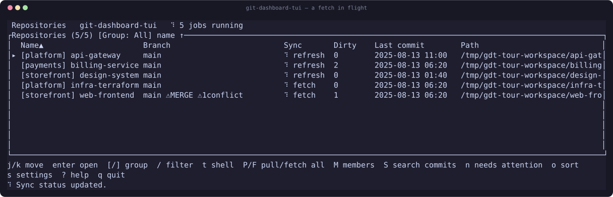
Release or development version?#
This manual follows main, including unreleased changes. The installer downloads the latest published release, even though the installer script comes from main. The first-run guide, detailed Home freshness context, O tool menu and W workspace were added after v0.3.1. See Unreleased in the changelog. For an older version, read the README at its release tag.
cargo install --git https://github.com/orapli/git-dashboard-tui --branch main --lockedBuilding main requires Rust 1.88 or later and a native linker/toolchain. Pre-built release binaries do not require Rust. To pin a release with the installer, use VERSION=v0.3.1 sh in place of sh.
Task walkthroughs#
| Item | Meaning |
|---|---|
| Start the day | Home: press r to reread local data. If you need current remote refs, use f on one repository or F for the filtered list. Press n, select a row and read the attention reason before opening it with Enter. |
| Inspect and edit | In Status (1), select a file and press Enter. In Diff, use n/p for hunks and b for blame. O opens your tools; configure the editor with c. After GUI edits, return to Home or Repo and press r. Returning from a terminal tool refreshes the diff file list and keeps the selected file and scroll position when that file remains. |
| Resume a worktree | Home W lists local worktrees. Search with /, add a purpose note with m, toggle a favorite with *, and filter favorites with f. Enter opens tools in the selected worktree. The Repo Worktrees tab (7) instead opens its shell directly with Enter. |
| Find a change across repositories | Home S searches commit messages. Enter a term, select a result and press Enter to inspect its diff. This searches messages, not file contents. Use Home M for cross-repository contributor totals. |
Keys depend on the screen: f fetches on Home, toggles full-file view in Diff, and filters favorites in Workspace. Use ? for context help or the complete keyboard/configuration reference.
Read status and refresh deliberately#
| Item | Meaning |
|---|---|
| Needs attention | Unresolved conflicts, an operation in progress, or a CI result classified as failure (failure, cancelled, timed_out, action_required). n filters these rows. Dirty files or ahead/behind counts alone do not qualify. |
| Unverified | Local data has not loaded, or GitHub data is unavailable, unauthenticated, failed, unsupported or at least five minutes old. It does not mean clean or CI success. A cached CI failure can count as both attention and unverified. |
| Counts and timestamps | Summary counts cover the current group and text search, before the attention-only filter. Categories can overlap. Local checked is the analysis time, not a network fetch time. CI checked time describes retrieved data, not when the run finished. Small terminals hide some context; enlarge the window. |
| CI scope and PR count | CI is the repository-wide latest run returned by gh, across branches and workflows; it is not proof that your checked-out branch passed. Check the displayed branch and press C to open that run. No runs, fetch failure and success are distinct. PR lists request at most 100 entries: 100+ means at least 100, including exactly 100. |
| Reload, fetch, pull | r rereads local data without git fetch. Home f/F fetch remote refs for one/the filtered repositories. p/P pull and may merge or rebase. Ahead/behind uses locally available upstream refs, so reload alone cannot discover new remote commits. |
GitHub uses a process-local five-minute cache after a successful check, or a one-minute retry delay after failure. Expiry does not schedule a request: the next reload does. Home auto-refresh is off by default; Settings i cycles off / 30 seconds / 1 minute / 5 minutes. There is no dedicated force-GitHub-refresh key. Failed requests retain the last successful values with their old timestamps. Restarting clears the in-memory GitHub cache; disk snapshots may still appear until refreshed.
Editor command examples#
Press O, then c, enter a command, and confirm with Enter. Set waiting with w in the same menu. These are configuration examples, not a claim of integration testing with every editor.
| Item | Meaning |
|---|---|
| VS Code | code "{path}" — wait off. To return after closing the editor target, use code --wait "{path}" and wait on. |
| Neovim / Vim | nvim "{path}" or vim "{path}" — wait on, so the editor owns the terminal until it exits. |
| Absolute path with spaces | "/opt/editor tools/editor" "{path}". On Windows use an actual executable, for example "C:/Program Files/Neovim/bin/nvim.exe" "{path}", with wait on. |
Commands are split into a program and arguments; they are not shell scripts. Quoting is supported, but shell aliases, $HOME, ~, pipes and redirections are not expanded. Use an absolute executable path or an exact executable name on an absolute PATH entry. The repository path is appended if {path} is absent. Settings c configures the separate external diff command; its placeholders are documented in the reference.
Platform and SSH support#
| Item | Meaning |
|---|---|
| Linux / macOS | Local Git views, shell, editor and installed Git clients. Unix shells use $SHELL (fallback /bin/sh). Release archives cover Linux x86_64/ARM64 and macOS Intel/Apple Silicon. |
| Windows | Core views are covered by Windows CI; releases target x64. Shell uses COMSPEC (fallback cmd.exe). Editor and Git-client lookup infers native .exe/.com suffixes, so ordinary lazygit.exe and gitui.exe installations on PATH work with the menu. Arbitrary PATHEXT script types are not inferred; use a native executable for editor commands, not a .cmd wrapper such as code.cmd. |
| ssh://host/absolute/path | Remote status, log, diff and contributor analysis require local ssh, remote git and noninteractive key authentication. Local shell/editor/clients, GitHub PR/CI queries and the cross-repository Worktree workspace are unsupported for these entries. A local clone with an SSH origin is still a local repository and is not subject to these restrictions. |
| Validation scope | CI runs Rust checks/tests on Linux x86_64/ARM64, macOS and Windows. The new tools/workspace flows were exercised in a Linux terminal with sample tools. This is not macOS/Windows GUI integration certification. |
Troubleshooting: symptom → check → fix#
| Item | Meaning |
|---|---|
| GitHub missing, unauthenticated or failed | Run gh auth status in the same environment as the TUI. From the repository, run gh pr list --limit 1 and gh run list --limit 1 to check repository access. For a normal local login use gh auth login --hostname github.com. An injected GH_TOKEN/GITHUB_TOKEN takes precedence over stored login: replace it through your environment’s secret mechanism. Wait for the one-minute failure delay, then Home r. |
| Wrong CI branch or old values | Compare the displayed branch/timestamp with gh run list --limit 1. Latest CI is repository-wide. A successful GitHub cache lasts five minutes; reload after expiry. After changing origin, Home r checks the new remote; cached values are separated by local path and remote configuration. |
| Ahead/behind does not change after reload | Inspect git remote -v and git status -sb in the repository. Use Home f to update its remote refs, then inspect status. Reload is not fetch; a branch without an upstream has no upstream comparison. |
| Changes missing after leaving a tool | Compare with git status --short in the tool’s directory. Terminal-tool return refreshes Home and the diff file list, including repositories registered through symlinks. For later GUI edits, return to Home or Repo and press r, then reopen Diff. Check that the tool edited the selected repository or worktree. |
| Tool not installed or terminal input conflicts | On Unix check command -v nvim; on Windows use where.exe nvim.exe. Configure that absolute executable path with menu c. Enable w waiting for terminal editors. Shell aliases and relative PATH entries are not used. See the Windows limitations above. |
| Registration or preferences do not persist | Check the error and configuration-directory permissions. When GIT_DASHBOARD_CONFIG_DIR points to a missing directory, saving configuration creates it, including parent directories. Its nearest existing parent must be writable. Use the reference’s isolated-config commands. Preserve config.json, members.json and prefs.json when troubleshooting; removing cache files is not a settings reset. |
| Worktree missing or errors counted | Run git -C /absolute/repository worktree list --porcelain for each registered local repository. Check missing paths and access rights. SSH entries are excluded. The error panel remains visible alongside healthy rows; use [/] to inspect each failed repository and its error. Press Workspace r after resolving the error. |
| SSH repository cannot load | Test ssh -o BatchMode=yes host git --version, then ssh -o BatchMode=yes host "git -C /absolute/repository status --short". Configure keys, host trust and the remote path outside the TUI. The app never prompts for an SSH password. |
| Command missing, old features, or macOS launch blocked | Check command -v git-dashboard-tui (Windows: where.exe git-dashboard-tui) for an older binary earlier on PATH. Add the install directory to PATH or run the binary by its full path. Compare the installed release with the version section above. On macOS, allow the downloaded app in System Settings → Privacy & Security if Gatekeeper blocked it. |
If unresolved, report the OS, installation method and release/commit, screen and keys used, expected/actual behavior, and complete error text. Remove credentials and private repository URLs before sharing logs.
The dashboard#
Every row is one repository. The colours carry the meaning, so the table is readable at a glance rather than something you parse column by column.
| Item | Meaning |
|---|---|
| Name | The alias you gave it, prefixed by its group in yellow. |
| Branch | Current branch, followed by badges: ⚠MERGE, ⚠REBASE, ⚠CHERRY-PICK or ⚠REVERT when an operation was left unfinished, and a conflict count. Badges are drawn first so they survive if the column is too narrow for everything. |
| Sync | Commits ahead of and behind the upstream, yellow when either is non-zero. Replaced by a spinner while a pull or fetch runs. |
| Dirty | Uncommitted changes — green at zero, red otherwise. |
| Last commit | Date of the most recent commit across all refs. |
| PR / CI | Open pull requests and the latest CI conclusion, for repositories with a GitHub remote and an authenticated gh. A failing, cancelled, timed-out or action-required run counts as needing attention. |
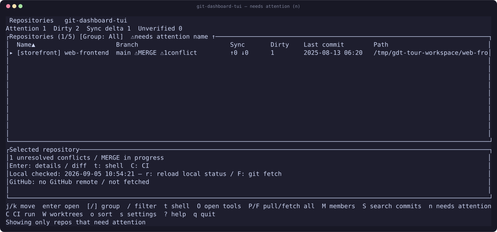
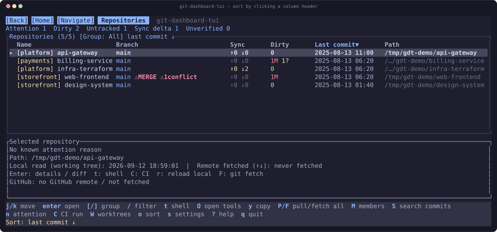
| Key | Action |
|---|---|
| Enter | Open the selected repository |
| a / A | Add by path / scan a folder and bulk-add |
| d / e | Remove / rename the alias |
| [ / ] | Cycle the group filter |
| / | Filter by name, path or group |
| n | Toggle the needs-attention filter |
| C | Open repository-wide latest CI run |
| O | Open work tools |
| W | Browse local worktrees across repositories |
| o | Cycle the sort order |
| p / f | Pull / fetch the selected repository |
| P / F | Pull / fetch every filtered repository |
| S / M | Cross-repository commit search / contributors |
| t | Open a shell in the repository |
| r / s | Reload every row / open Settings |
Inside a repository#
Seven tabs, reachable with 1–7, Tab, or by clicking them. On a narrow terminal the labels shorten rather than the last tabs disappearing.
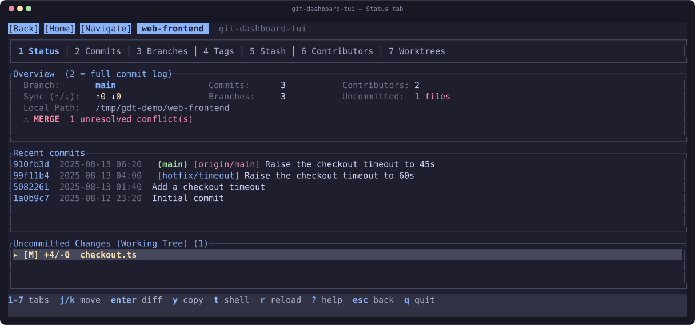
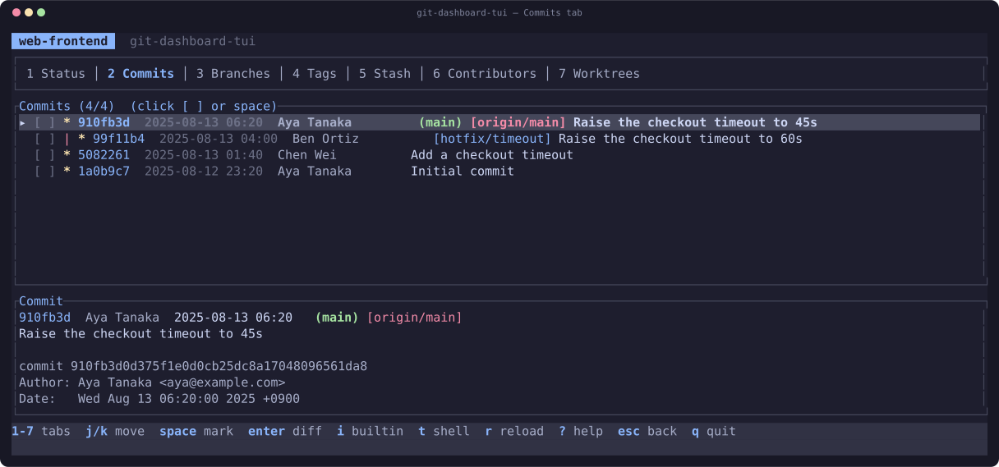
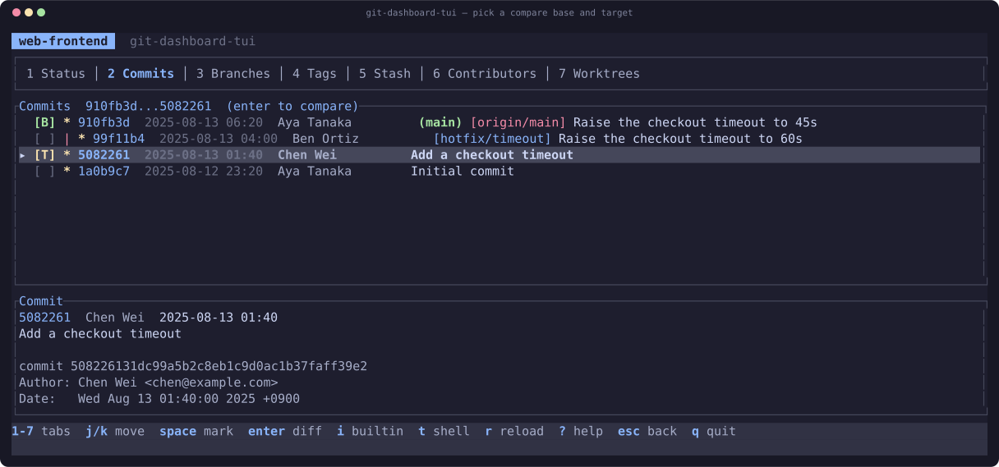
[ ] at the start of a row, or press space. The first becomes the base [B], the second the target [T], and Enter diffs the range. Clicking a marked row again clears it.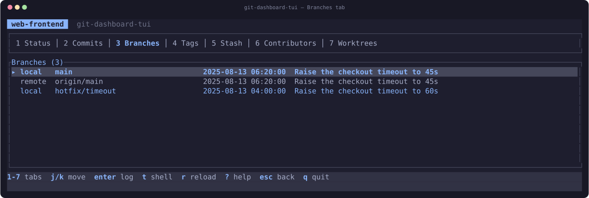
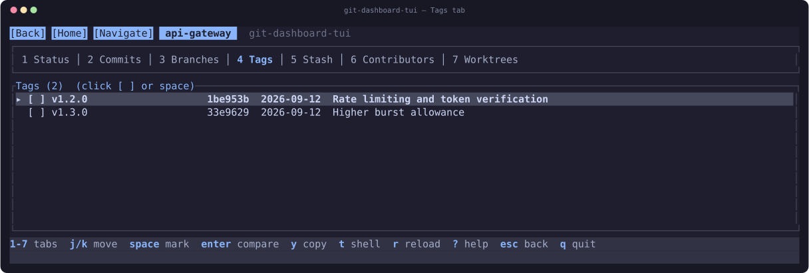
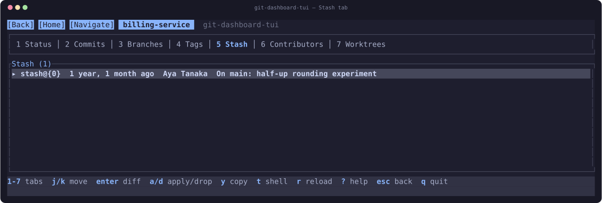
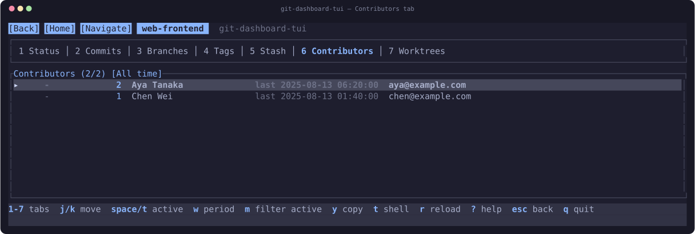
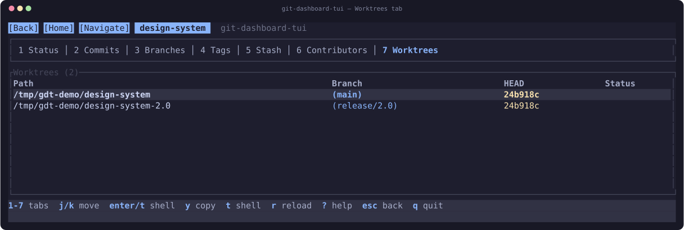
Reading a diff#
Three panes: the changed files, the hunks in the selected file, and the diff itself. Tab moves between them, n and p jump hunk to hunk.
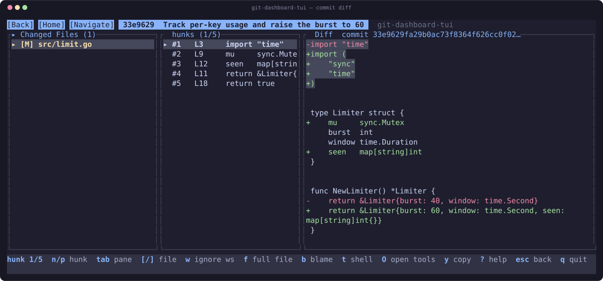
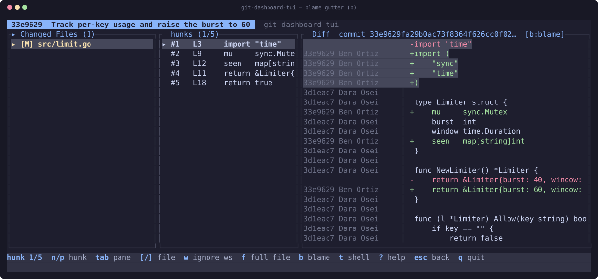
| Key | Action |
|---|---|
| w | Ignore whitespace changes |
| f | Show the whole file, not just changed context |
| b | Toggle the blame gutter |
| [ / ] | Previous / next changed file |
| n / p | Next / previous hunk |
{path}, {range}, {base}, {target} and {file}. Programs are resolved from PATH or given as an absolute path — a relative path is rejected, since the child runs with the displayed repository as its working directory and that repository may not be yours.Across every repository#
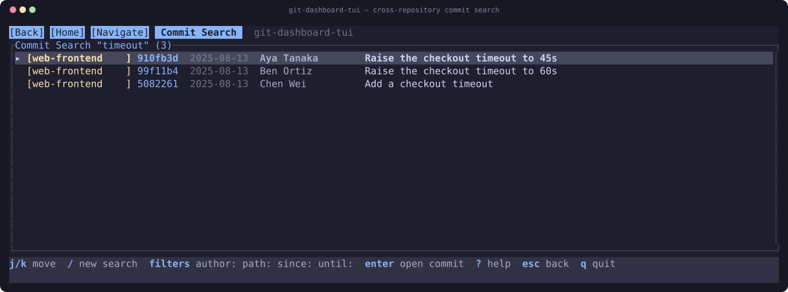
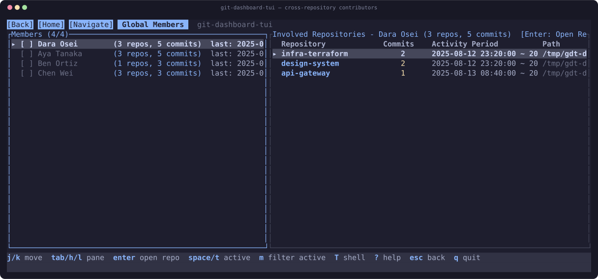
Worktrees across repositories#
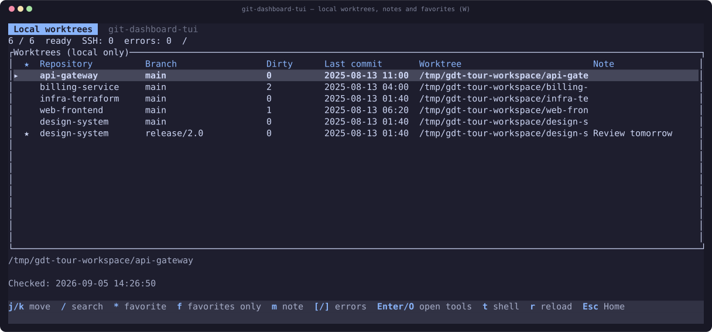
Press W on Home for a local worktree workspace. Each path appears once, even when both a parent and its linked worktree are registered. The table shows the first registered parent, branch, dirty count, HEAD commit date and directory name; the selected row’s full path appears below. SSH entries are skipped and counted.
Use / to search paths, branches and purpose notes. m edits your note; * toggles a favorite and f filters favorites. Notes and favorites are stored in preferences by canonical local path. Enter or O opens the tool menu; t starts a shell in that worktree. r refreshes in the background while navigation remains available. Rows may show previous values until refreshed; use [/] to inspect repository collection errors even when healthy rows are selected. Errors stay distinct from a clean worktree. These are Git states and personal notes, not AI agent activity.
Open your work tools#
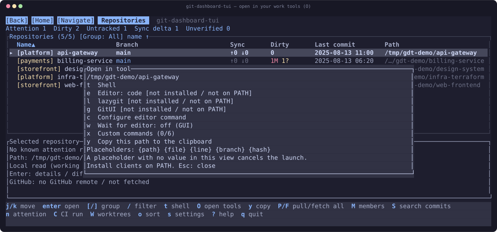
Press O on Home, Repo or Diff. Choose t for a shell, e for the editor, l for lazygit, or g for GitUI. Unavailable commands are marked; install clients on PATH. SSH repositories do not support local tool launch.
Configure the editor with c in that menu. Quoted arguments and {path} are supported; without that placeholder the repository path is appended as one argument. Use w to enable waiting for terminal editors; GUI launch does not wait by default. After a terminal tool exits the dashboard restores input and reloads the selected repository. For subsequent GUI edits use r to reload. Commands must be absolute paths or names on PATH.
Settings and files#
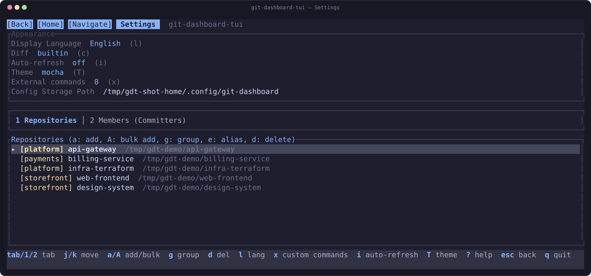
Configuration lives in the OS config directory — ~/Library/Application Support/com.git-dashboard.git-dashboard/ on macOS, ~/.config/git-dashboard/ on Linux, %APPDATA%\git-dashboard\git-dashboard\config\ on Windows.
| Item | Meaning |
|---|---|
| config.json | Registered repositories: name, path, group. |
| members.json | Team members and the commit-author aliases merged into them. |
| prefs.json | Language, theme, sidebar, diff toggles, recent comparisons, sort order, refresh interval, external diff command, editor command/wait, onboarding dismissal, and worktree notes/favorites. |
| tech_rules.json | Rules for detecting language and framework versions. |
| cache/ | Cached dashboard rows and repository snapshots. Safe to delete; rebuilt on the next refresh. |
100+.What it does with a repository you do not trust#
Registering a repository means running git inside it, and git reads that repository's own configuration. Several config keys are enough to execute arbitrary commands, so every invocation neutralises them: core.fsmonitor, core.sshCommand, uploadpack.packObjectsHook and protocol.ext.allow, plus --no-ext-diff --no-textconv so diff.external and textconv drivers cannot fire. Git's own safe.directory does not cover this.
Repository content is untrusted in the same way. File text, commit messages, branch names and author names all reach the screen, and a terminal executes what it is sent — so escape sequences are removed from everything git returns, at the single point where its output becomes a string. Tabs are expanded where content is displayed, so a tab-indented file cannot push text out of its pane.
An ssh:// locator whose host begins with - would be passed to ssh as an option, so hosts are validated against an allowlist. When several git commands share one SSH connection, the delimiter between their outputs is an unpredictable per-call nonce — a fixed one could be forged by a commit author named after it.
Everything else#
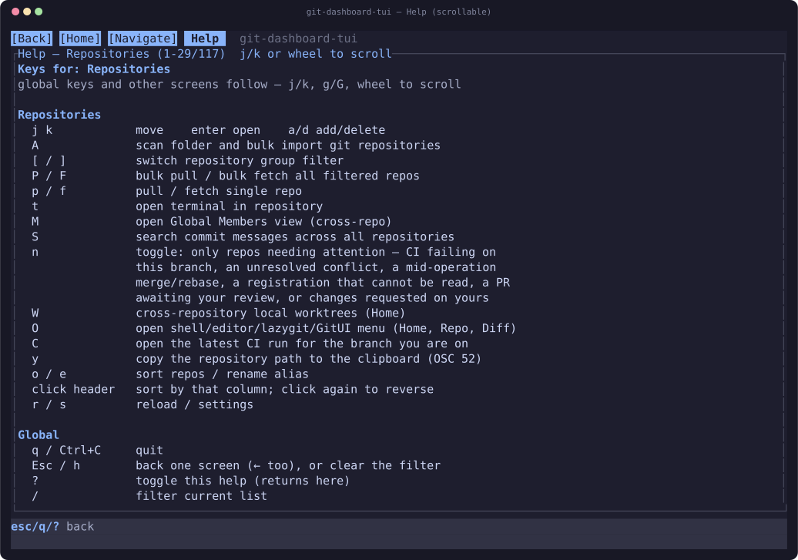
| Key | Action |
|---|---|
| q / Ctrl+C | Quit |
| Esc / h | Back one screen |
| g / G | First / last item |
| t / T | Open a shell in the repository directory |